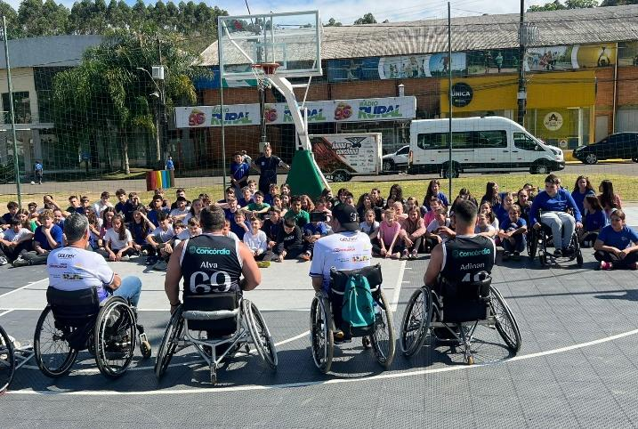
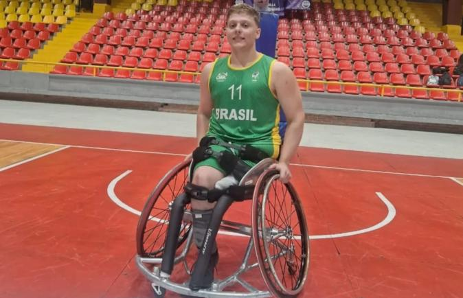

2006
Fundação
Nasce a Associação Águias de Concórdia, com o propósito de promover esporte adaptado e inclusão social para pessoas com deficiência física.
Nossa história e atuação
Uma trajetória construída através do esporte, da inclusão, do desenvolvimento humano e da participação social.
Nossa identidade
A Associação de Pessoas com Deficiência Física Águias de Concórdia/SC foi fundada em 2006 com o propósito de promover a prática esportiva adaptada e criar oportunidades de inclusão social para pessoas com deficiência física.
O que começou como um esforço coletivo entre amigos transformou-se em uma instituição sólida, que vem ampliando suas atividades, sua estrutura e seu impacto social na comunidade.
Atualmente, a associação atende 20 pessoas com deficiência física, integrando as modalidades de Basquetebol em Cadeira de Rodas e Canoagem Adaptada.

Nossa trajetória
Ao longo de quase duas décadas, os Águias ampliaram suas atividades e sua presença na comunidade.
Nasce a Associação Águias de Concórdia, com o propósito de promover esporte adaptado e inclusão social para pessoas com deficiência física.
A associação amplia suas atividades, competições, parcerias e ações de inclusão, consolidando sua atuação regional.
A equipe passa a desenvolver visitas, demonstrações e atividades com escolas de Concórdia e municípios da região.
A associação mantém sua atuação esportiva e amplia ações voltadas à inclusão, acessibilidade, formação e participação social.
Nossa atuação
O trabalho dos Águias vai além das quadras e envolve esporte, inclusão, convivência, desenvolvimento e participação social.
Desenvolvimento da prática esportiva adaptada, proporcionando condições para participação, segurança, qualidade e desenvolvimento dos atletas.
Participação das pessoas com deficiência no processo de inclusão social, promovendo convivência, bem-estar e troca de experiências.
Participação em eventos, ações municipais, atividades com parceiros e iniciativas que aproximam o esporte da comunidade.
Compartilhamento de experiências e conhecimentos sobre o paradesporto com escolas, estudantes e futuros profissionais.

Desenvolvimento
Os programas desenvolvidos pela associação oferecem aos atletas condições para praticarem esporte com segurança, qualidade e acompanhamento adequado.
O trabalho busca promover saúde, bem-estar, desenvolvimento integral, participação esportiva e desenvolvimento de habilidades e potencialidades.
A experiência esportiva também contribui para fortalecer autoestima, confiança e participação das pessoas com deficiência.
Esporte que chega até as pessoas
O trabalho desenvolvido com escolas aproxima o paradesporto dos estudantes e cria oportunidades para conhecer, experimentar e desenvolver novas habilidades.
Um dos exemplos apresentados pela associação é o do atleta Henrique Heydt.
Durante uma visita à Escola Básica Municipal das Nações, um aluno demonstrou interesse pelo trabalho desenvolvido. Posteriormente, tornou-se atleta dos Águias e passou a participar de treinamentos e competições.
Sua trajetória chegou ao Campeonato Brasileiro Sub-23 e posteriormente ao cenário nacional de alto rendimento.
Impacto social
O trabalho dos Águias participa de diferentes espaços de inclusão, acessibilidade e integração com a comunidade.
Realização do Jogo de Basquete sobre Rodas, reunindo atletas, escolas, entidades parceiras e comunidade em momentos de integração, conscientização e valorização da diversidade.
Participação em ações e eventos voltados à inclusão e à aproximação das pessoas com deficiência com a sociedade.
Participação no Conselho Municipal dos Direitos da Pessoa com Deficiência e na Comissão Permanente de Acessibilidade.
Participação em projeto voltado à geração de ações de inclusão e acesso a projetos culturais na região da AMAUC.
Além do esporte
A associação busca desenvolver parcerias que possam encaminhar atletas para oportunidades de trabalho e capacitação, promovendo também desenvolvimento esportivo e social.
A proposta aproxima empresas e atletas, contribuindo para acesso a oportunidades de emprego e carreira, desenvolvimento de habilidades, liderança, gestão, diversidade e inclusão.
Um dos exemplos apresentados é o atleta Wellington, que buscou conhecimento através do Programa A Inclusão Transforma, da Coperdia.
Empresas e instituições podem contribuir para ampliar oportunidades e fortalecer o desenvolvimento dos atletas.
Conheça nossos parceirosResultados
O histórico esportivo dos Águias registra participações e resultados em competições regionais, estaduais e nacionais.
2º lugar Parajasc
2º lugar Liga Oeste SC e Norte do RS
1º lugar Parajasc
1º lugar Copa Sesc
1º lugar Campeonato Catarinense
1º lugar Campeonato Catarinense
1º lugar Parajasc
1º lugar Parajasc
1º lugar Campeonato Catarinense
1º lugar Taça Santa Catarina
Campeão Brasileiro – Manaus
1º lugar Copa Sesc
2º lugar Copa Sul
2º lugar Parajasc
Manutenção na 2ª Divisão do Campeonato Brasileiro
2º lugar Parajasc
2º lugar Campeonato Catarinense
2º lugar Campeonato Catarinense
2º lugar Campeonato Catarinense
2º lugar Campeonato Catarinense
2º lugar Parajasc
3º lugar Campeonato Catarinense
3º lugar Parajasc

Atleta em destaque
O atleta Henrique Heydt teve destaque no Campeonato Brasileiro Sub-23 e participou de treinamentos da Seleção Brasileira Sub-21.
Em 2024, foi convidado para integrar a equipe da Andef, do Rio de Janeiro, para a disputa do Campeonato Brasileiro Sub-23.
Posteriormente, participou da primeira divisão nacional, sendo escolhido como atleta revelação e ajudando sua equipe na competição.
Em 2025, representou a Seleção Brasileira de Basquetebol em Cadeira de Rodas Sub-23 no Torneio Internacional Américas Championships, em Bogotá, na Colômbia, e no Campeonato Mundial Sub-23, realizado em São Paulo.
Reconhecimento
O trabalho desenvolvido pela equipe também recebeu reconhecimento público.
Recebimento de moção de aplausos pela conquista do terceiro lugar no Parajasc Lages 2025 e pelo esforço e dedicação da equipe ao longo de sua trajetória.
Henrique Heydt recebeu reconhecimento pela participação no Torneio Internacional Américas Championships, realizado em Bogotá, na Colômbia.
Continue conhecendo
Descubra as ações e iniciativas desenvolvidas pelos Águias de Concórdia através do esporte, do paradesporto e da inclusão.